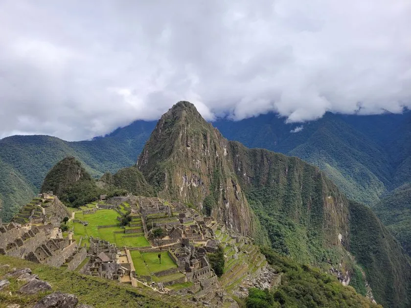
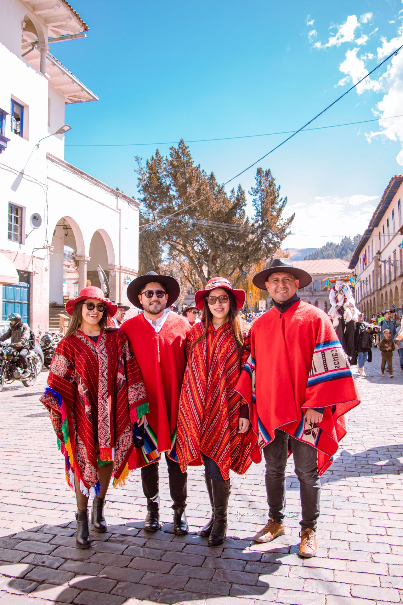

The "Discover Cuzco" Family
About Us

When you travel with us, you aren't just a customer—you become part of our family. We are deeply committed to your travel security and well-being every step of the way. With our dedicated local expertise, you can explore the wonders of the Andes with complete peace of mind, knowing that we care for your journey as if it were our own.
How it all started?
Discovering Cuzco was born from a simple yet profound love for the Andean mountains and the rich heritage of our ancestors. What began years ago as a small personal journal mapping out hidden trails and local secrets quickly grew into a larger mission. We realized that travelers weren't just looking to take photos—they wanted to truly connect with the heart of the Inca Empire. Driven by a passion for authentic exploration, we founded this company to guide adventurers beyond the usual tourist paths and share the true, vibrant soul of Cuzco with the world.
We Care About You!
Your safety and comfort are our absolute top priorities. We understand that traveling to a high-altitude destination like Cuzco can feel a bit daunting, which is why our experienced local team is here to ensure a completely seamless journey. From secure, private transportation to carefully vetted accommodations, we meticulously plan every detail. Our expert guides are trained in high-altitude first aid and pace every excursion so you can acclimatize naturally. Just relax, breathe in the crisp Andean air, and immerse yourself in the breathtaking landscapes, knowing you are in safe, caring hands.
